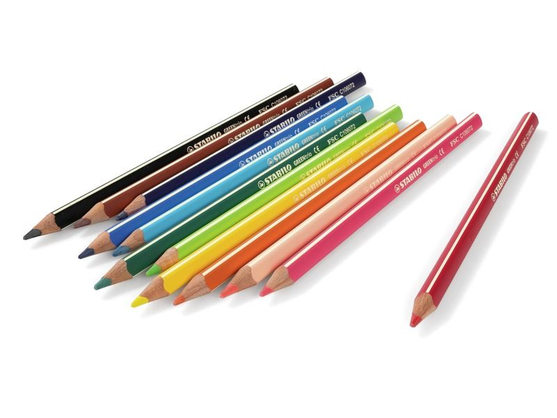
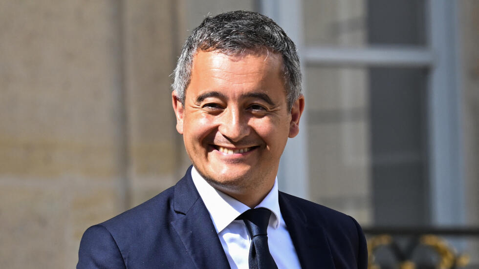
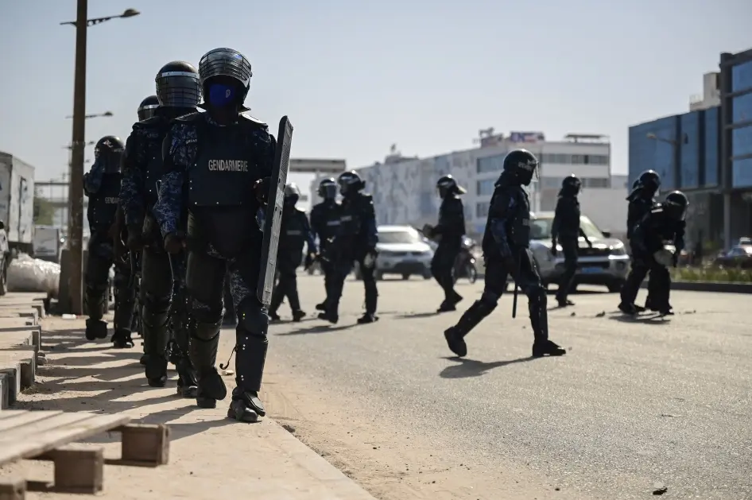

Une boutique de vente en ligne d'objets faits à partir de dessins
d'enfants (Print on demand) a été découverte sur Internet, et a été
tout de suite reliée à un professeur d'art canadien, qui revendait
ces dessins pour arrondir ses fins de mois. Les pièces pouvaient
se vendre plus de 100 CAD l'unité...
Il revendait les dessins de ses élèves
13/02/2024 - La Rédaction
Darmanin supprime le droit du sol
12/02/2024 - La Rédaction

C'est du moins ce qu'il souhaite faire à Mayotte. Gérald Darmanin
a annoncé une révision constitutionnelle pour supprimer le droit du
sol à Mayotte, une mesure destinée à lutter contre l'immigration
illégale dans cette petite île de l'océan Indien. Sa proposition
vise à répondre à une crise prolongée, marquée par des barricades
routières, la présence de bidonvilles et une immigration non
contrôlée. Si cette initiative divise la classe politique, certains
applaudissent cette décision radicale (à droite), tandis que d'autres
critiquent vivement (à gauche), y voyant une remise en cause des
principes fondamentaux de la République. La réforme constitutionnelle,
qui nécessitera un vote au Congrès, est au cœur des débats politiques
et promet d'être un sacré enjeu...
Borne se dit fière de son bilan à Matignon
11/02/2024 - La Rédaction
Avant son retour à l'Assemblée Nationale très prochainement en tant
que députée du Calvados, Élisabeth Borne est revenue sur la période
où elle a été Première ministre (2022-2024). Elle se dit fière d'avoir
mené des réformes qu'elle a jugé nécessaires, notamment la controversée
réforme des retraites, portant la retraite à 64 ans , et qui a provoqué
des vagues de manifestations dans toute la France. Elle dit avoir subi
les invectives et les menaces...
Report de l'élection présidentielle au Sénégal
11/02/2024 - La Rédaction

Le report de l'élection présidentielle au Sénégal intervient dans un
contexte de tensions politiques et d'incertitudes croissantes. Alors
que le pays fait face à des défis économiques et sociaux majeurs, le
report de l'élection soulève des préoccupations quant à la stabilité
politique et à la démocratie dans la région. Le président autoritaire
Macky Sall, déjà peu apprécié, avait déjà arrêté son opposant Ousmane
Sonko, provoquant de vives manifestations....